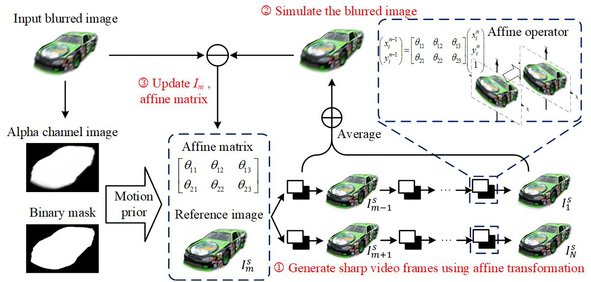

Multispectral demosaicing via non-local optimization
 We report a general demosaicing method via joint nonlocal optimization, incorporating both the mosaic formation and the grouped sparsity of nonlocally matched image blocks to boost accuracy.
We report a general demosaicing method via joint nonlocal optimization, incorporating both the mosaic formation and the grouped sparsity of nonlocally matched image blocks to boost accuracy.
Net | mosaic2hsi
 We report an end-to-end deep learning method to reconstruct hyperspectral images directly from a raw mosaic image.
We report an end-to-end deep learning method to reconstruct hyperspectral images directly from a raw mosaic image.
Large-scale phase retrieval
 We report a novel large-scale phase retrieval technique, with high efficiency and strong generalization on different imaging modalities. We for the first time demonstrate 8K-level (7680×4320 pixels) phase retrieval in minute-level time.
We report a novel large-scale phase retrieval technique, with high efficiency and strong generalization on different imaging modalities. We for the first time demonstrate 8K-level (7680×4320 pixels) phase retrieval in minute-level time.
Complex-domain pixel super resolution
 We report an efficient complex-domain pixel super resolution technique, with enhanced imaging resolution and strong robustness. Extensive simulations and experiments validate that the reported technique outperforms others with as much as 11dB higher PSNR and one-order-of-magnitude higher image analysis precision.
We report an efficient complex-domain pixel super resolution technique, with enhanced imaging resolution and strong robustness. Extensive simulations and experiments validate that the reported technique outperforms others with as much as 11dB higher PSNR and one-order-of-magnitude higher image analysis precision.
Vedio extraction from a blurred image
 We report a novel technique to extract sharp video frames from a single blurred image. It enables to tackle various types of complex motion in reality such as rotation and motion-in-depth.
Single-pixel depth imaging
 We report a single-pixel depth imaging (SPDI) technique that uses a single-pixel detector to acquire both the target's depth and reflectance images.
We report a single-pixel depth imaging (SPDI) technique that uses a single-pixel detector to acquire both the target's depth and reflectance images.